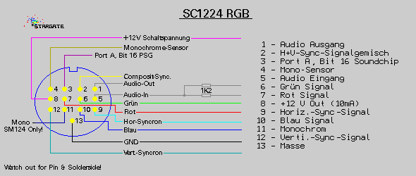
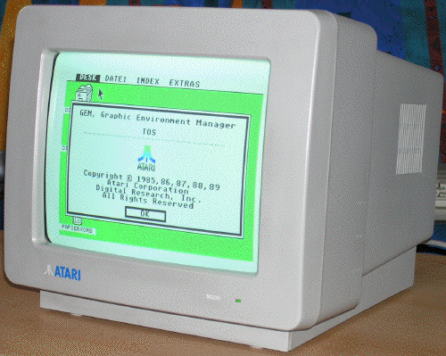

|
|
18.5 SC1224 Monitor
Atari RGB-Monitor SC1224 Die Pinbelegung des 13poligen DIN-Steckers als Grafik.
 Abbildung 1 - Steckerbelegung des RGB-Monitor
Der Monitor erwartet ein Bildsignal bei 15Khz, also RGB. Etwas
anderes ist nicht mÜglich.
There's three different versions of the Atari 1224 monitor, JVC,
Samsung, and Goldstar all made 1224's. I know on mine the volume is on
the same dial as the on/off but the other two models probably have
slightly different controls.
Es gibt drei verschiedene Hersteller f¦r diesen Monitor, JVC,
Samsung und Goldstar. Man kann die Unterschiede an den
EinstellknÜpfen erkennen. Das am weitesten verbreiteste Modell
ist das von Goldstar. Es ist auch das erste Modell das Hergestellt
wurde.
 Abbildung 2 - SC1224 RGB Farbmonitor
Bild: von Bernd Maedicke
|
|
|